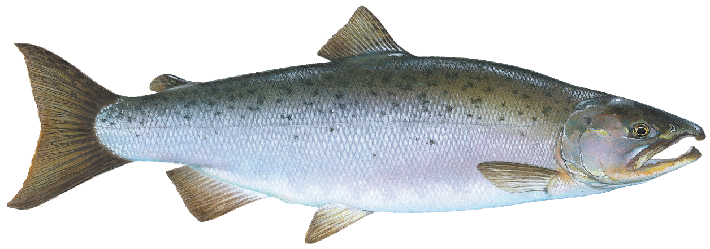

Coho
oncorhynchus kisutch
Also known as a silver, coho are the second least abundant (following Chinook) salmon. While they are one of the most commercially sought after species they make up only 7-10% of the commercial salmon fishery. They spend 1-2 years in freshwater, and prefer near shore feeding grounds. Coho usually travel less then 100 miles from the moth of their stream for reproduction with the exception of a few populations that do travel over a thousand miles. While in the ocean they have dark metallic blue or greenish backs with silver sides and a light belly. They have small black spots on their backs and the upper lobe of the tail. Another distinguishing feature is their gum line which is white. Spawning colors are dark with reddish coloration on their sides. These fish generally live 3-5 years, are about 24-28in in length, and weigh about 5-10 lbs.